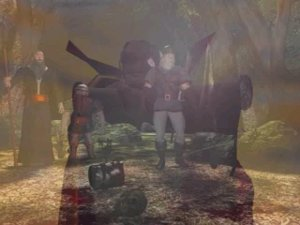
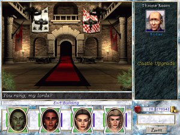
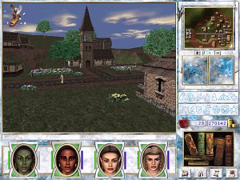
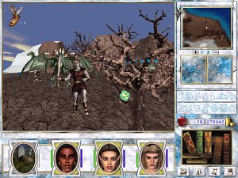
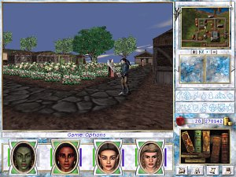
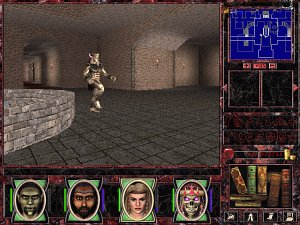
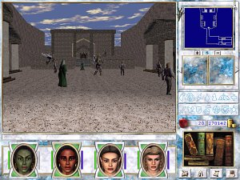
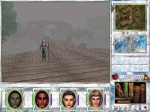

Recenze Might and Magic VII - For Blood and Honor
Pøesnì rok poté, co se LEVEL rozhodl vydat v pøíloze jako plnou hru ¹estý díl, se na pultech stánkù objevuje øíjnové èíslo (10/2001) obsahující i sedmý díl této herní série. Tím v¹ak také vydávání her ze svìta Might and Magic jako pøíloh tohoto èasopisu nadobro skonèilo. Ponechme dohady stranou a podívejme se, co sedmý díl pøinesl nového. Vìøte, ¾e toho nebude málo. Pøíbìh hry navazuje na události z konce tøetího dílu Heroes of Might and Magic a definitivnì se zde vypoøádáme s povìstnými Kreegany. Oproti ¹estému dílu se pozmìnil systém vývoje postav, vzrostl poèet povolání a ras charakterù a zcela podle oèekávání se zmìnila grafika hry.
Královna Catherine je v Erathii stále pøítomna a sna¾í se o nastolení poøádku po nedávných vpádech vojsk nekromantù. Mezi tím se objevuje nová hrozba ze strany elfského krále Parsona, který si nárokuje práva na oblast hradu Harmondale a od pobøe¾í Mìlèin se ¹íøí nové zvìsti o osmy podivných bytostech. Ètyøi z nich se vydali do Brakady a ètyøi do Deyje. Tato nová informace se dostává a¾ k u¹ím velkovezíra Gavina Magnuse v Brakadì a Archibalda Ironfista v Jámì a oba projevují znaèný zájem se s tìmito bytostmi setkat. Pokud jste mìli mo¾nost hrát tøetí díl ságy, nejspí¹e u¾ tu¹íte, kdo tìmi bytostmi jsou, nebudu v¹ak ji¾ více napovídat, na konci hry to zjistíte sami. Va¹e dru¾ina se na poèátku hry objeví na Smaragdovém ostrovì, kde budete mít za úkol vyhrát sbìratelskou soutì¾ Lorda Markhama. Za odmìnu budete moci doplout na pobøe¾í Erathie a získáte do svého majetku sporný hrad Harmondale. Velmi rychle se o vás dozví jak zástupci Erathie tak i Avlee a budou vás pøemlouvat, aby jste se pøipojili na jednu ze stran. Bude jen na vás, jak se zachováte. Hlavní pøíbìh se v¹ak ubírá jiným smìrem, brzy budete postaveni pøed tì¾¹í volbu a po výbìru cesty svìtla nebo temnoty teprve zaène va¹e bitva o záchranu svìta. Pøíbìh se v jednotlivých stranách mírnì li¹í, resp. budete místy dostávat protichùdné úkoly k druhé stranì, ale finálový úkol bude stejný. Závìr hry, koneèná animace, je pak odli¹ná pro ka¾dou z obou stran.
U¾ z pøíbìhu je nejspí¹e zøejmé, ¾e tento díl ságy si pro vás pøipravil øadu novinek. Krom rozvìtvenìj¹ího pøíbìhu se zmìny dotkly i samotné tvorby dru¾iny a dovedností. Pokud si vzpomínáte, v ¹estém díle jste si vybírali pouze povolání a platilo, ¾e pokud se postava mù¾e dovednost nauèit, pak v ní i mù¾e dosáhnout mistrovské úrovnì. Sedmý díl ¹el mnohem dále a zavedl je¹tì dal¹í stupeò - úroveò velmistra. Povolání postavy pak nejen urèuje, jestli se postava mù¾e danou dovendost nauèit, ale také jakého stupnì v ní mù¾e maximálnì dosáhnout. Pro dosa¾ení vy¹¹ích stupòù je obvykle je¹tì potøeba, aby byla postava pový¹ena na nejvy¹¹í úroveò ve svém povolání. Nyní u¾ se napø. nemohou v¹echna povolání dostat na nejvy¹¹í úroveò v dovednosti luku a podobné je to i u jiných zbraní a pomocných dovedností jako vzdìlávání, posilování a obchodování, kterými si postavy v ¹estém díle výraznì pomáhali. Mo¾nost výbìru rasy pak sebou nese dal¹í mo¾nosti. Lidé jsou pova¾ováni za neutrální rasu a nemají tak ¾ádné bonusy ani postihy. Ostatní tøi rasy, goblini, elfové a trpaslíci u¾ jimi obdaøeni jsou. Nìkteré vlastnosti se u nich mohou zvy¹ovat rychleji ne¾ jiné, tzn. ¾e investice jednoho bodu do vlastnosti ve skuteènosti zvý¹í vlastnost o dva body. Stejné je to s postihy, akorát je to obrácenì. Aby se vlastnost zvedla o jeden bod, je tøeba investovat body dva. Ka¾dá z ras má bonusy a postihy k jiným vlastnostem a jejich kombinace jednotlivé rasy pøedurèuje k urèitým povoláním. Napø elfové jsou zdatní kouzelnící, goblini pak bojovníci.
Pøi výbìru dru¾iny je tedy vhodné dobøe si rozvá¾it, jakou zvolit rasu ke konkrétnímu povolání a jak povolání ve skupinì nakombinovat, aby jste si vytvoøili co nejvyvá¾enìj¹í dru¾inu. Poèáteèní tvorba dru¾iny se tak stává zajímavým prvkem hry, proto¾e zde se rozhohuje, jak snadnou hru si výbìrem dru¾iny vytvoøíte. Samozøejmì i zde máte na výbìr pøednastavenou dru¾inu, tak¾e tvorbu mù¾ete zcela vynechat. O tom, jestli se dané povolání mù¾e nauèit nìjakou dovednost na vy¹¹í úrovni vás pak informuje tabulka ukrytá pod informací ka¾dé dovednosti. Kdy¾ na dovednost kliknete pravým tlaèítkem my¹i, zobrazí se informaèní okno a v¹echny polo¾ky, které jsou èervené u¾ jsou mimo mo¾nosti va¹eho charakteru. Pokud má povolání mo¾nost dostat se vý¹e, ale je tøeba nejprve dosáhnout vy¹¹ího povolání, pak daná polo¾ka bude oznaèena ¾lutì. Tím jsme se dostali k samotnému povy¹ování postav. Hra celkovì rozli¹uje dvì úrovnì pový¹ení, kterých dosáhnete po splnìní zadaných úkolù. O pový¹ení se starají významnìj¹í obyvatelé po celém kontinetu a najdete je v rùzných mìstech. První pový¹ení je spoleèné v¹em, ke druhému pový¹ení bude potøeba, aby jste si nejprve vybrali cestu svìtla nebo temnoty. Výbìr cesty je v¹ak souèástí pøíbìhu, tak¾e chvilku potrvá, ne¾ se k tomu dostanete. V závislosti na výbìru cesty pak budete mít dvì mo¾nosti nejvy¹¹í úrovnì. V cestì svìtla se objeví dobrá povolání, v cestì temnoty zlá povolání, ale jejich mo¾nosti zvy¹ování úrovnì dovedností budou stejné (s vyjímkou mnicha, kde se za cestu temnoty bude moci nauèit expertní úroveò kradení).
Ve høe budete mít krom pový¹ovacích úkolù mo¾nost splnit i øadu obyèejnìj¹ích úkolù. Novì zde máte mo¾nost stát se pøekupníkem a dová¾et urèité zbo¾í z jedné oblasti do druhé a prodávat je tam za výhodnìj¹í cenu. Jak jsem ji¾ v úvodu zmínil, vedle hlavní dìjové linie budete vta¾eni i do sporù mezi Erathií a Avlee a budete se tak moci úèatnit války lidí a elfù. Hra pak navíc skrývá malou herní vsuvku v podobì hospodské hry Arcomage. Jedná se o karetní hru, kterou si budete moci zahrát v ka¾dém hostinci po celém kontinentu. Budete k tomu potøebovat balíèek karet a je s tím spjat i jeden zajímavý úkol, kdy za výhru ve v¹ech hospodách obdr¾íte hlavní cenu. Úroveò hry je v ka¾dém hostinci jiná, u jedné se poøádnì zapotíte a druhou zvládnete bìhem chvilky. Za ka¾dou první výhru vás pøímo v hostinci èeká penì¾itá odmìna. Po výbìru cesty svìtla nebo temnoty se úkoly dìjové linie rozdìlí a za ka¾dou cestu je budete dostávat jinde. Spolu s výbìrem cesty souvisí i výrazná zmìna vzhledu herní obrazovky, která se projeví zmìnou barvy a bohu¾el za cestu temnoty neni zrovna v ideálním kontrastu. Místy to bude pùsobit a¾ ru¹ivì.
Øadu monster, na které ve høe narazíte, ji¾ budete znát z pøedchozího dílu. Novì se ve høe objevila dovednost identifikace nestvùr a ta vám na vysokých úrovních dovolí zji¹»ovat nejen zdraví, ale i ostatní vlastnosti monster. Díky tomu se budete moci vyhnout bojùm, které budou mimo mo¾nosti va¹í dru¾iny anebo se podle toho budete moci lépe pøipravit vhodnìj¹í volbou kouzel. U titánù a minotaurù napø. zùstala schopnost postavy vymýtit. Vy v¹ak máte v sedmém díle mo¾nost tomuto pøedejít kouzlem Ochrana pøed magií, tak¾e narozdíl od ¹estého dílu se boj s nimi stává snesitelnìj¹í. Magie sama v sedmém díle pøíli¹ných zmìn nedoznala. Do¹lo jen k men¹í obmìnì kouzel, napø. Telekineze se pøesunula do magie zemì, pøibyly kouzla jako Ochrana pøed magií nebo kouzlo Temné tajemství bylo nahrazeno Obìtováním apod. Magie svìtla a temnoty neni nyní spojena s povìstí dru¾iny, ale pøímo se samotným výbìrem cesty. Nebudete se tedy moci nauèit obì, ale jen jednu z nich. K magii musím øíci je¹tì jednu podstatnou vìc. Ka¾dé kouzlo je teï souèástí urèité úrovnì dovednosti, co¾ pro vás znamená, ¾e postava s normální úrovní dovednosti se nebude moci nauèit kouzla expertní a vy¹¹í úrovnì.
Cestování po kontinentu je standardnì realizováno pomocí stájové dopravy anebo lodní trasou. Do urèitých oblastí se v¹ak nedostanete jinak ne¾ pì¹ky. Pe¹í cestování je nyní èasovì odli¹eno a pøesun z jedné oblasti do sousední oblasti u¾ nemusí trvat jen 5 dní. Zmìnilo se trochu i pou¾ívání kouzla Mìstské brány. Pro odemèení oblasti je tøeba se nejprve v dané oblasti napít z fontány mìstské brány. Volný pohyb v rámci kouzla je opìt mo¾ný a¾ na mistrovské úrovni, ale mistr vodní magie ¾ije v Nighonu, kam se dostanete jen pì¹í trasou a pøes celkem nebezpeèné podzemí. Z poèátku budete tedy o mo¾not plného vyu¾ití bran ochuzeni. Pøi svých cestách místy narazíte i na tzv. Výzvy. Jedná se o nádoby na podstavcích, v nich¾ hoøí oheò. Ka¾dá je pojmenována podle jedné ze základních vlastností. Má-li postava pøíslu¹nou vlastnost dostateènì vysokou, mù¾e se pokusit u Výzvy vyhrát. Za odmìnu dostane urèitý poèet Dovednostních bodù. Je to vcelku zajímavý nápad, ale z poèátku hry ho urèitì nevyu¾ijete. Dal¹í zajímavostí, která je více vyu¾itelná, jsou sloupky s koulí, tzv. piedestaly, které slou¾í jako oltáøe rùzných odolností. Po kliknutí se tak postavám zvý¹í jeden z mo¾ných atributù. Obvykle platí, ¾e v oblasti naleznete takový piedestal, který nejvíce odpovídá kouzelnému útoku zdej¹ích monster.
Jak u¾ je to u nových dílù ságy typické, hru naleznete na dvou CD. Pøi instalaci je sice mo¾né nahrát i doplòková data pro urychlení celkového naèítání hry, ale to v dne¹ní dobì ji¾ postrádá smysl. Velkou zmìnou pro¹el engine hry a samotná grafika. Ta je nyní plnì kreslená a dovoluje zobrazit i nejmen¹í detaily, co¾ oceníte zejména pøi zvìt¹ování map oblastí. V tomto ohledu udìlal sedmý díl velký krok kupøedu. Vedle toho se zmen¹ila velikost øady dungeonù a v ka¾dém naleznete monstra podobné úrovnì. Nebudete tak hned od poèátku vystaveni obtí¾ným podmínkám jako tomu bylo u ¹estého dílu. V nastavení hry máte nyní i mo¾nost pøepínat mezi re¾imem chùze a bìhu, nemusíte tedy kvùli bìhu stále dr¾et shift. Zvukový doprovod je stále na vysoké úrovni a vhodnì doplòuje herní atmosféru. Jakmile se objevíte na Smaragdovém ostrovì, pøipojí se k vám navíc na pozici NPC prùvodce, který se vám postará o jakýsi tutorial, ale lze ho i vypnout. Bohu¾el hra trpí znaènou nekompatibilitou s Windows XP, tak¾e pro její úspì¹né spu¹tìní je tøeba nejprve nainstalovat neoficiální patch. Pøijdete tak o hudební doprovod a øadu doprovodných krokù, co¾ je docela ¹koda. Dal¹í problém spoèívá v pøítomnosti nìkolika nepøíjemných bugù, z nich¾ nejèastìj¹í jsou zmizelé d¾bány promìny potøebné pro pový¹ení liche. Je proto tøeba nainstalovat oficiální patch 1.1, který by mìl tento problém odstranit.
Pøesto, ¾e by se z recenze mohlo zdát, ¾e sedmý díl je velice zdaøilý, mìl jsem z poèátku men¹í obtí¾e s jeho hraním. Poøád musím jeho styl hraní porovnávat s jednoduchostí ¹estého dílu, který je v tomto ohledu volnìj¹í. V sedmièce je tøeba mít na pamìti rozdílnou mo¾nost dosa¾ení vy¹¹ích úrovní v dovednostech v závislosti na povolání, tak¾e se nelze spolehnout na søeleckou pøesilu. Ov¹em to by nebyl zas takový problém, pøedtím jsem mìl mo¾nost dohrát osmý díl, který je postaven na tom samém principu. Problém spoèíval ve vy¹¹í obtí¾nosti v poèátku hry. Jakmile jsem dorazil do Harmondale, zjistil jsem, ¾e zdej¹í armády goblinù oplývají støeleckým útokem, tak¾e jejich likvidace neni nic jednoduchého. V Mohylovém údolí jsem se pak støetl s hordami nemrtvých. Díky tomu jsem se v poèátku dlouho motal na ni¾¹ím levelu a trvalo dlouho, ne¾ jsem mohl s úspìchem pokraèovat v pøíbìhu. Oproti tomu v osmém díle je poèátek hry vyrovnanìj¹í. Je tedy tøeba se na poèátku více vìnovat tréninku postav a dovednostními body zbyteènì neplýtvat na nepotøebné dovednosti. Je to men¹í detail, který by v¹ak mohl nìkteré z nováèkù odradit.
Vzhledem k uvedeným novinkám je sedmý díl i pøes poèáteèní vy¹¹í obtí¾nost velice zdaøilý a posunuje celou ságu smìrem kupøedu. Rozvìtvenost dìje je vhodným zpestøením hry, podobnì jako úkoly spojené s válkou mezi lidmi a elfy. Bohu¾el, celkový dojem kazí pøítomná nekompatibilita se systémy Windows XP, kde díky neoficiálnímu patchi pøijdete o hudební doprovod a doprovodné zvuky. Místy se tak budete pohybovat v podivném tichu. Podobnì jako je tomu u ostaních dílù, ani sedmý díl u¾ dnes na pultech obchodù neobjevíte. Pokud se vám v¹ak dostane do rukou, urèitì neváhejte a zaènìte své dobrodru¾ství za záchranou svìta pøed hrozbami Kreeganù a ukonèete Ticho. Je to jeden z mála klasických dungeonù, který si dnes zahrajete i bez nutnosti vlastnit supervýkoný poèítaè.
29.4.2007